처음 로그인부터
매일의 홈페이지 관리까지
필요한 항목을 목차에서 선택하고, 화면의 번호와 설명을 함께 보며 따라 해 보세요.
홈페이지 안에서 수정하는 방법과 관리자 화면에서 관리하는 방법을 함께 안내합니다.
캡처는 현재 구현된 관리 화면을 사용했으며, 게시글·상담 내역은 가이드용 예시입니다. 운영 사이트는 최신 버전 배포 후 같은 화면을 사용할 수 있습니다.
01
관리자 로그인 방법
운영 사이트에서 로그인하면 관리자 페이지와 홈페이지 내 관리 버튼을 함께 사용할 수 있습니다.
- 홈페이지를 맨 아래까지 내려 푸터의 copyright(© 저작권 문구) 옆에 있는 로그인 아이콘을 누릅니다. 아이콘을 누르면 관리자 로그인 페이지로 이동합니다. 이 가이드의 관리자 로그인 링크로도 접속할 수 있습니다.
- 발급받은 관리자 아이디와 비밀번호를 입력하고 로그인합니다.
- 관리 화면에서 작업할 게시판을 선택합니다. 홈페이지에서 작업하려면 홈페이지 보기를 누릅니다.
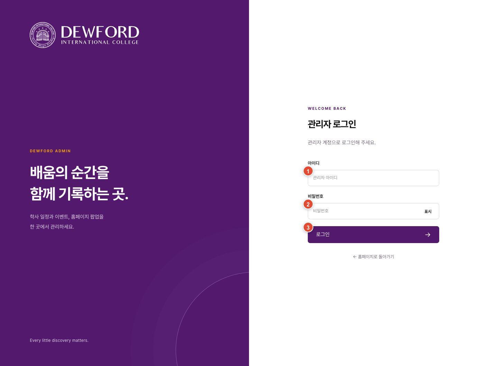
1아이디 입력란을 클릭하고 발급받은 아이디를 입력합니다.
2비밀번호를 입력합니다. 입력이 정확한지 확인하려면 표시 버튼을 누릅니다.
3로그인 버튼을 누릅니다. 성공하면 관리자 게시판 화면으로 이동합니다. 오류가 뜨면 입력값을 확인하고 다시 시도합니다.
푸터에서 로그인 페이지 열기
모든 페이지 맨 아래의 © 2026 DEWFORD INTERNATIONAL COLLEGE. All rights reserved. 옆에 있는 아래 모양의 아이콘을 찾으세요. 아이콘을 눌러 로그인 화면을 연 뒤 발급받은 아이디와 비밀번호를 입력합니다.
처음 접속하는 경우
브라우저 주소창에 운영 사이트 주소 뒤에 /admin-login.html을 붙여 엽니다. 현재 운영 주소는 dewford-re.rapda98.workers.dev/admin-login.html입니다. 로그인 후에는 같은 사이트 주소에서 홈페이지 관리 버튼을 사용할 수 있습니다. 컴퓨터의 HTML 파일을 직접 열어 작업하지 마세요.
02
관리자 페이지 사용방법
왼쪽 메뉴에서 관리 대상을 선택합니다. 모바일에서는 메뉴가 화면 상단에 표시됩니다.
| 메뉴 | 할 수 있는 작업 |
|---|---|
| 이벤트 게시판 | 행사 소식 등록·수정, 공개 설정, 순서 변경 |
| 유치부 캘린더 | 유치부 일정을 날짜별로 등록·수정 |
| 초등부 캘린더 | 초등부 일정을 날짜별로 등록·수정 |
| 팝업 관리 | 홈페이지 팝업 이미지와 노출 기간 관리 |
| 상담 접수 | 신청 확인, 상태 변경, 삭제, 엑셀 다운로드 |
| 교습비 관리 | 푸터에서 열리는 교습비 이미지 등록 |
| 공통 정보 관리 | 카카오톡·네이버 톡톡 주소 변경 |
저장을 눌러야 등록·수정 내용이 반영됩니다. 업로드가 끝났더라도 저장하지 않고 창을 닫으면 변경이 완료되지 않습니다.
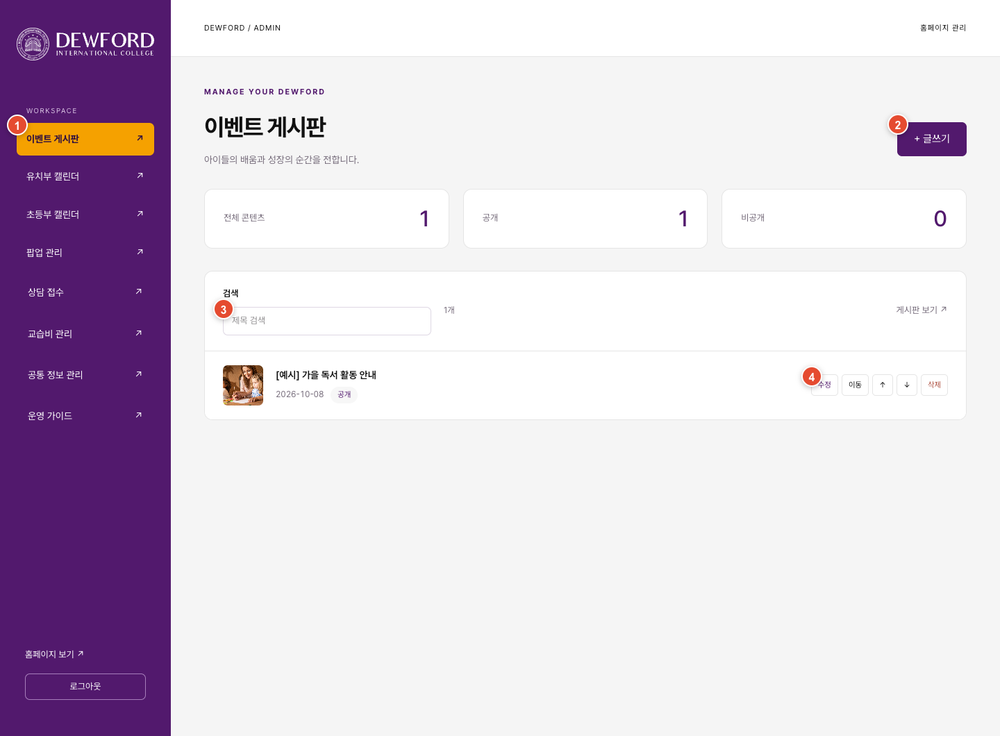
1왼쪽 메뉴에서 이벤트·캘린더·팝업·상담 접수 등 관리 대상을 먼저 선택합니다. 선택된 메뉴는 배경색으로 구분됩니다.
2+ 글쓰기를 누르면 새 글을 작성하는 편집 창이 열립니다.
3제목 일부를 입력하면 현재 게시판에서 해당 글을 찾을 수 있습니다.
4수정은 내용을 바꾸고, 이동은 다른 게시판으로 옮기는 작업입니다. ↑·↓는 표시 순서를 바꾸며, 삭제는 해당 글을 제거합니다.
등록과 수정을 구분하세요
새 소식은 글쓰기로 등록하고, 이미 올린 글의 오타나 사진을 바꿀 때는 그 글의 수정 버튼을 사용합니다. 같은 내용을 다시 글쓰기로 등록하면 기존 글이 바뀌는 것이 아니라 글이 한 개 더 생깁니다.
03
홈페이지 설명
홈페이지는 DEWFORD 소개, 교육 프로그램 안내, 입학상담, 행사 소식과 학사 일정으로 구성됩니다.
- 이벤트: 목록에서 글 제목이나 이미지를 누르면 상세 페이지를 볼 수 있습니다.
- 캘린더: 유치부·초등부 일정을 구분해 확인하며, 날짜를 선택하면 해당 날짜의 일정이 표시됩니다.
- 상담 신청: 홈, Contact, 입학상담 페이지의 양식이 같은 상담 접수함에 연결됩니다.
- 푸터: 학원등록번호 옆의 교습비를 누르면 안내 이미지가 열립니다.
- 영상: 화면에 들어오면 음소거 자동 재생하고 반복 재생합니다. 화면 밖에서는 일시정지합니다.
방문자 화면과 관리자 화면의 차이
로그인하지 않은 방문자는 소식·일정·이미지와 상담 양식만 볼 수 있습니다. 관리자 로그인 후에는 같은 홈페이지에 글쓰기·수정 등 추가 버튼이 표시됩니다. 홈페이지에서 연 편집 창도 관리자 화면과 같은 저장 기능을 사용합니다. 관리 버튼이 보인다고 해서 방문자에게도 해당 버튼이 보이는 것은 아닙니다.
04
교습비 등록 방법
- 교습비 관리를 엽니다.
- 교습비 안내 이미지에서 PNG, JPEG 또는 WebP 파일을 선택합니다. 한 파일은 20MB 이하로 준비합니다.
- 업로드된 미리보기를 확인하고 저장합니다.
- 홈페이지 푸터에서 교습비를 눌러 새 이미지가 보이는지 확인합니다.
교습비 이미지는 홈페이지 팝업 이미지와 별도로 관리합니다. 원본 크기를 기준으로 표시하며, 화면을 넘을 때만 축소됩니다.
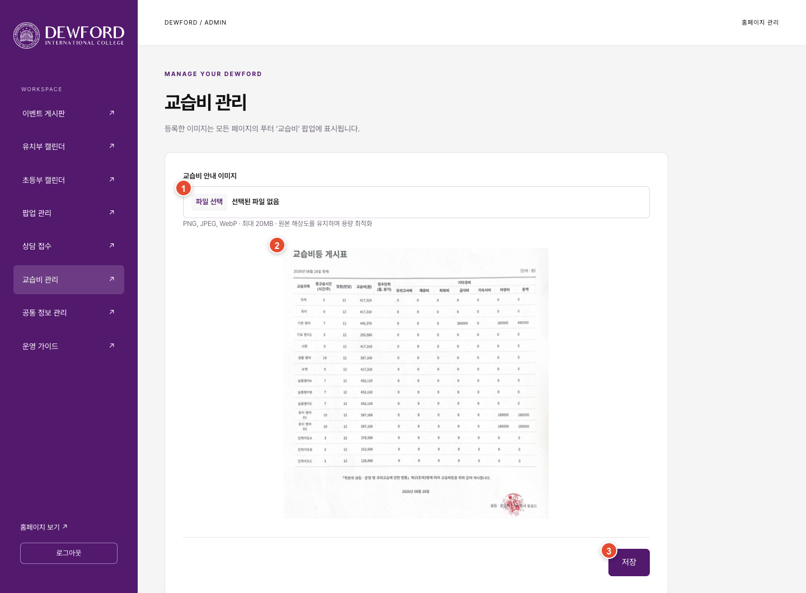
1파일 선택을 누르고 컴퓨터에 저장된 교습비 이미지 한 장을 선택합니다. 업로드가 완료될 때까지 기다립니다.
2미리보기에서 금액·항목·안내 문구가 잘 읽히는지 확인합니다. 다른 이미지를 골랐다면 다시 파일을 선택합니다.
3저장을 누르고 저장 완료 안내를 확인합니다. 업로드만 하고 이 화면을 닫지 마세요.
기존 교습비를 교체할 때
같은 순서로 새 이미지를 선택하고 저장하면 기존 교습비 이미지를 교체합니다. 저장 후 홈페이지를 새로고침하고 화면 맨 아래 학원등록번호 옆의 교습비를 눌러 확인합니다. 홈페이지 팝업 관리에서 이미지를 바꾸는 작업과는 별개입니다.
05
이벤트 게시판 글 등록 및 수정 방법
사이트 내에서 등록·수정
- 먼저 관리자 로그인 후 이벤트 페이지로 이동합니다.
- 목록 위의 글쓰기를 누릅니다. 기존 글은 해당 글의 수정을 누릅니다. 상세 페이지에서도 로그인하면 최근 소식 아래 관리 버튼을 사용할 수 있습니다.
- 편집 팝업에서 제목, 날짜, 목록 소개글, 내용, 대표 이미지와 추가 사진을 작성합니다.
- 공개 여부를 확인하고 저장합니다. 홈페이지에서 글과 이미지를 확인합니다.
관리자 페이지에서 등록·수정
- 이벤트 게시판 관리를 선택합니다.
- 새 글은 + 글쓰기, 기존 글은 목록의 수정을 누릅니다. 제목 검색으로 글을 찾을 수 있습니다.
- 내용과 사진을 편집하고 공개 여부를 설정한 뒤 저장합니다.
- 게시판 보기를 눌러 결과를 확인합니다.
내용 편집기는 글자 크기·색상·굵기·목록·정렬 등을 지원합니다. 대표 이미지는 목록과 상세 화면에, 추가 사진은 상세 화면의 이미지 갤러리에 사용됩니다.
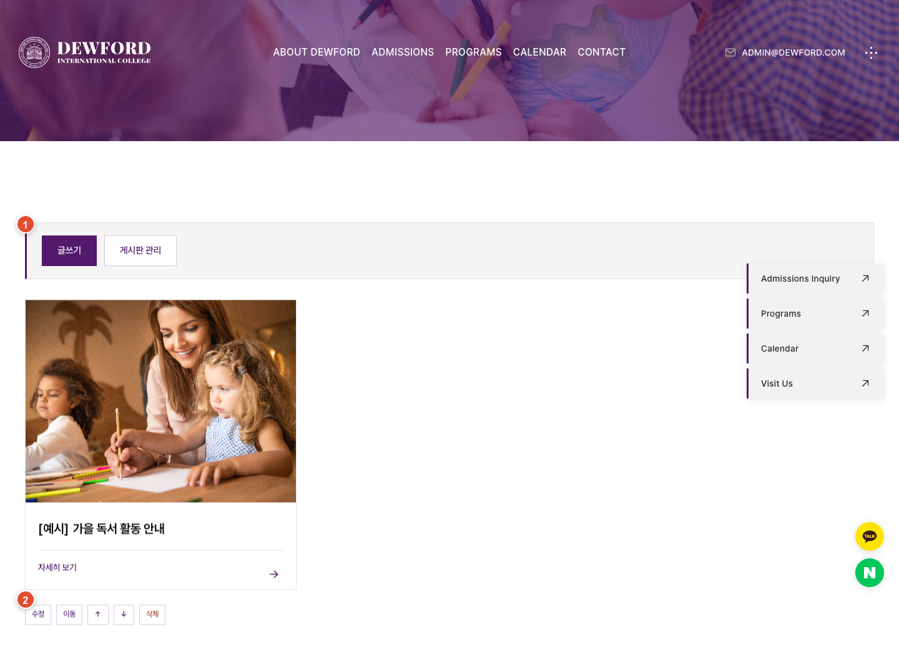
1이벤트 목록 위 글쓰기 버튼은 새 글을 등록할 때 사용합니다. 게시판 관리는 관리자 목록으로 이동하는 버튼입니다.
2각 소식의 수정 버튼은 그 글을 편집합니다. 게시물이 많으면 원하는 글을 먼저 찾아 수정합니다.
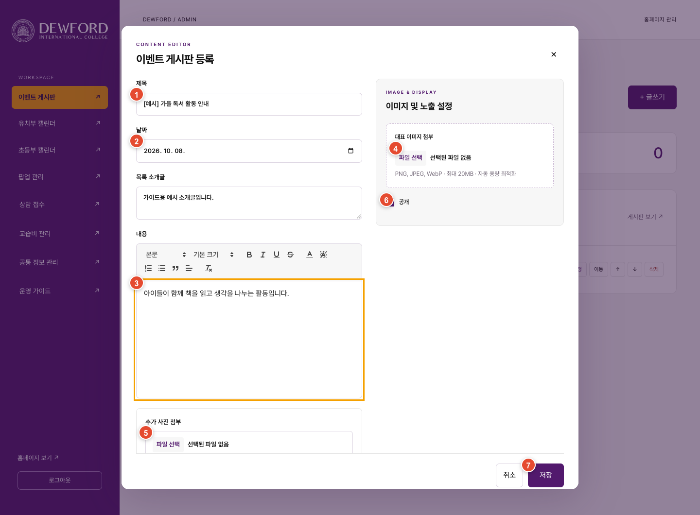
1제목: 방문자에게 보일 글 제목을 입력합니다. 예: 가을 독서 활동 안내.
2날짜: 소식의 날짜를 선택합니다. 달력 모양 버튼을 누르면 날짜를 고를 수 있습니다.
3내용: 본문을 작성합니다. 목록 소개글은 목록에서 짧게 소개하는 문구이며, 본문과 별도로 입력합니다. 위 도구로 굵게·목록·정렬 등을 적용할 수 있습니다.
4대표 이미지 첨부: 목록과 상세 상단에서 사용할 사진 한 장을 고릅니다.
5추가 사진 첨부: 더 보여 줄 사진을 선택합니다. 여러 장을 함께 선택할 수 있으며 첨부 후 미리보기에서 개별 삭제도 가능합니다.
6공개: 체크하면 방문자에게 표시됩니다. 작성 중이라면 체크를 해제해 비공개로 저장합니다.
7저장: 업로드가 완료된 뒤 누릅니다. 취소 또는 ×는 저장을 완료하는 버튼이 아닙니다.
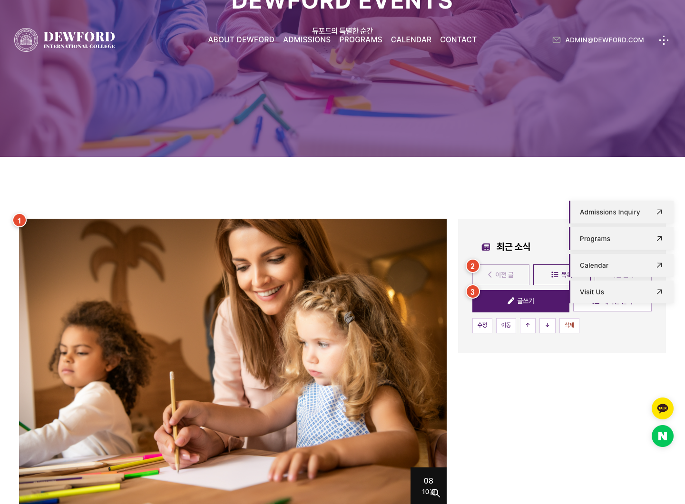
1본문 사진을 누르면 확대 팝업이 열립니다.
2이전 글·목록·다음 글은 방문자용 이동 버튼입니다.
3글쓰기는 새 글 등록이며 게시판 관리는 관리자 목록으로 이동합니다. 그 아래 수정 버튼으로 지금 보고 있는 글을 편집합니다.
사진 교체와 최종 확인
기존 글의 수정 창에서 대표 이미지를 새로 선택하고, 필요 없는 추가 사진은 삭제한 뒤 저장합니다. 저장 후 이벤트 목록과 상세 페이지를 모두 확인해 주세요. 비공개 글은 관리자 목록에는 남아 있지만 공개 홈페이지에서는 표시되지 않습니다.
06
캘린더 게시판 글 등록 및 수정 방법
사이트 내에서 등록·수정
- 로그인 후 유치부 캘린더 또는 초등부 캘린더를 엽니다.
- 등록할 날짜를 선택하고 글쓰기를 누릅니다. 선택한 날짜가 편집 화면에 전달되므로 저장 전 날짜를 확인합니다.
- 제목, 내용과 필요한 이미지를 작성하고 공개 여부를 설정한 뒤 저장합니다.
- 기존 일정은 날짜를 선택해 일정 영역의 수정을 누릅니다.
관리자 페이지에서 등록·수정
- 관리 메뉴에서 유치부 또는 초등부 캘린더를 선택합니다.
- + 글쓰기 또는 기존 일정의 수정을 누릅니다.
- 일정의 날짜와 내용을 입력하고 저장합니다.
- 실제 캘린더에서 해당 날짜를 선택해 일정이 표시되는지 확인합니다.
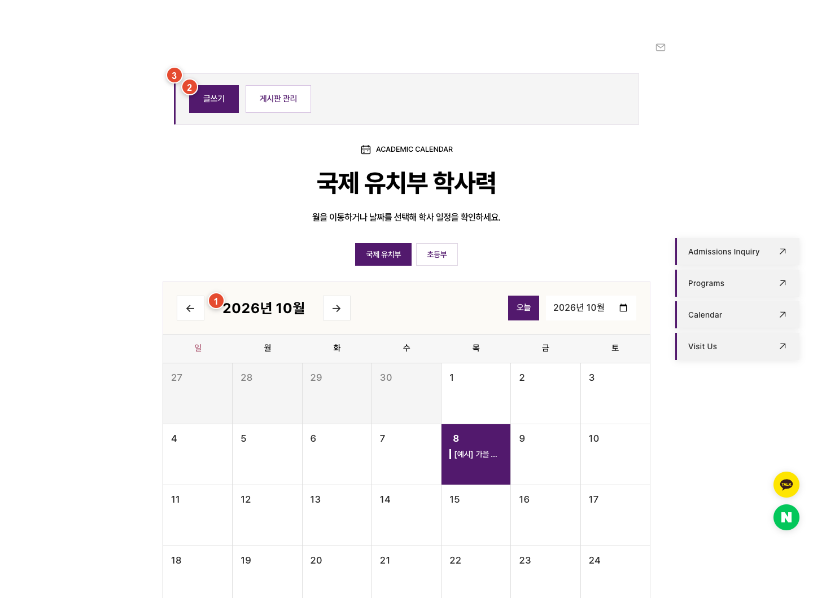
1월 표시와 이전·다음 버튼으로 등록할 일정의 달을 맞춥니다.
2원하는 날짜를 클릭합니다. 선택한 날짜에 따라 아래 일정 내용이 바뀝니다.
3선택한 날짜를 확인한 뒤 글쓰기를 누릅니다.
4날짜 아래 일정이 표시됩니다. 이 영역의 수정 버튼으로 이미 등록한 일정을 수정할 수 있습니다.
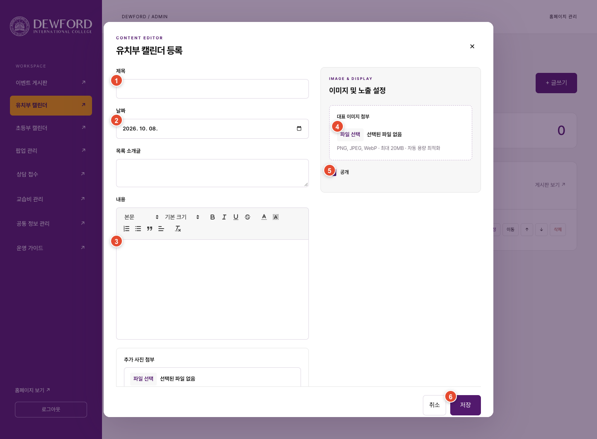
1일정 제목을 입력합니다. 예: 독서 활동 또는 학부모 상담 안내.
2일정이 표시될 날짜를 확인합니다. 다른 날짜를 선택하면 일정도 그 날짜로 이동합니다.
3상세 안내 내용을 입력합니다. 시간이나 준비물도 본문에 함께 적어 주세요.
4사진이 필요하면 대표 이미지를 첨부합니다. 사진이 없어도 일정 내용을 등록할 수 있습니다.
5공개 여부를 확인합니다.
6저장을 누르고 캘린더에서 해당 날짜를 다시 선택해 확인합니다.
관리자 목록에서 등록할 때
유치부 캘린더 또는 초등부 캘린더 메뉴를 선택한 다음 + 글쓰기를 누르면 같은 편집 창이 열립니다. 홈페이지에서 선택한 날짜 없이 관리자 화면에서 바로 작성할 때는 날짜 입력란을 직접 확인하는 것이 중요합니다. 초등부 일정을 유치부에 잘못 올렸다면 이동 버튼으로 게시판과 날짜를 다시 지정합니다.
07
이미지 확대 팝업과 사진 첨부
캘린더 일정의 사진과 이벤트 상세 페이지의 대표·추가 사진에는 우측 하단에 돋보기 아이콘이 표시됩니다. 사진을 누르면 확대 팝업이 열립니다.
- 이벤트 상세에 사진이 여러 장이면 좌우 버튼이나 키보드 방향키로 이동합니다. 자동 슬라이드는 사용하지 않습니다.
- 하단 미리보기 사진을 누르면 해당 사진으로 이동합니다. 사진이 많으면 가로로 스크롤할 수 있습니다.
- 우측 상단 × 또는 Esc 키로 닫습니다.
- 사진은 원본 비율을 유지하고 화면보다 클 때만 축소됩니다.
업로드할 사진 준비
PNG·JPEG·WebP 형식, 파일당 최대 20MB를 사용합니다. 추가 사진은 최대 20장입니다. 게시판 사진은 업로드 시 용량과 해상도를 자동 최적화하므로, 글자가 포함된 이미지는 업로드 후 미리보기와 확대 화면에서 읽을 수 있는지 확인하세요.
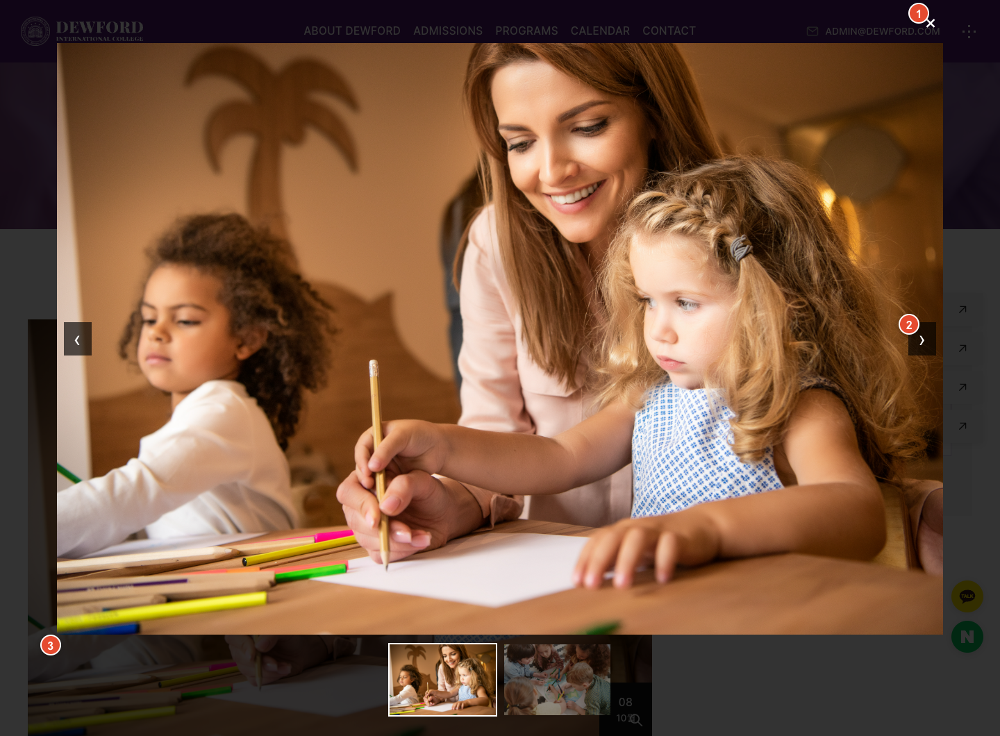
1× 버튼을 누르면 확대 화면을 닫고 원래 글로 돌아갑니다.
2좌우 버튼으로 이전·다음 사진을 봅니다. 사진이 한 장이면 이동 버튼이 없습니다.
3작은 미리보기 사진을 클릭하면 해당 사진으로 바로 이동합니다. 미리보기가 많으면 가로로 스크롤합니다.
캘린더 이미지도 사진을 클릭해 확대할 수 있습니다. 이미지가 흐리면 원본 파일의 해상도를 확인하고 다시 첨부해 주세요. 미리보기의 작게 보이는 크기와 팝업에서 확인하는 실제 크기는 서로 다릅니다.
08
상담 신청과 관리자 확인 방법
방문자가 상담 신청하기
- 홈페이지, Contact 또는 입학상담 페이지의 상담 양식을 엽니다.
- 필수 항목(*)을 입력하고 관심 과정을 선택합니다. 개인정보 수집·이용에 동의합니다.
- 신청 버튼을 누르고 상담 신청이 접수되었습니다 안내를 확인합니다.
관리자가 접수 내역 확인하기
- 상담 접수를 엽니다. 새 접수는 최신순으로 표시됩니다.
- 이름·연락처·과정·상담 내용으로 검색하거나 새로고침합니다.
- 타이틀을 눌러 상세 팝업에서 연락처와 신청 내용을 확인합니다.
- 상세 팝업의 상담 단계를 접수 / 진행중 / 완료 중에서 선택하고 상태 변경을 누릅니다.
일괄 처리와 엑셀 다운로드
- 행의 체크박스로 상담을 선택합니다. 상단 체크박스는 현재 페이지 전체를 선택합니다.
- 상단 셀렉트 박스에서 상태를 고르고 상태 일괄 변경을 누르면 선택한 상담만 변경됩니다.
- 일괄 삭제는 선택한 상담만 삭제합니다. 행 오른쪽 삭제 버튼은 해당 상담 한 건을 삭제합니다.
- 엑셀 다운로드: 선택한 상담이 있으면 선택 내역만, 없으면 검색 조건과 관계없이 전체 내역을 받습니다. 파일은 Excel에서 열 수 있는 XML 형식입니다.
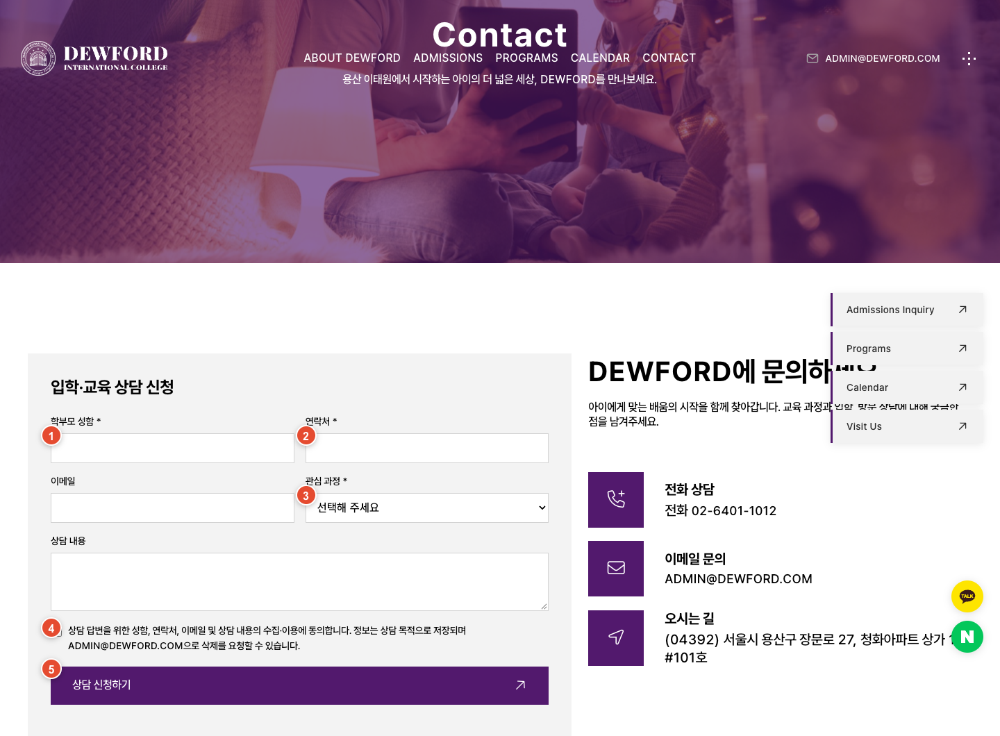
1학부모 성함을 입력합니다.
2연락 가능한 번호를 입력합니다.
3관심 과정을 선택하고 이메일·상담 내용을 필요한 만큼 입력합니다.
4개인정보 수집·이용 동의에 체크합니다. 동의하지 않으면 접수되지 않습니다.
5신청 버튼을 누르고 접수 성공 안내를 기다립니다. 오류 안내가 보이면 접수가 완료된 것으로 보지 않습니다.
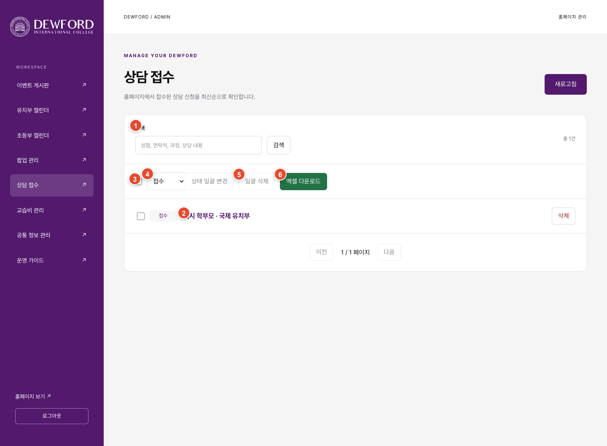
1검색어를 입력하고 검색을 누릅니다. 새 신청을 확인하려면 새로고침을 누릅니다.
2상담 타이틀을 누르면 연락처와 신청 내용이 있는 상세 팝업이 열립니다.
3현재 페이지의 모든 상담을 선택할 때 사용합니다. 일부 상담만 처리하려면 각 행의 체크박스를 누릅니다.
4상태를 접수·진행중·완료 중 하나로 선택하고 상태 일괄 변경을 누릅니다. 선택한 상담에만 적용됩니다.
5일괄 삭제는 선택한 상담만 삭제합니다. 확인 창에서 대상 건수를 확인하세요.
6엑셀 다운로드는 선택한 상담만 내려받습니다. 아무 것도 선택하지 않았으면 전체 접수 내역을 받습니다.
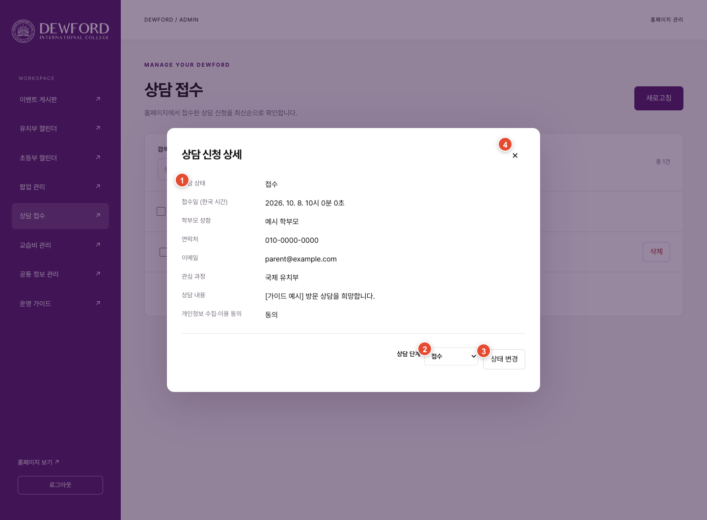
1성함·연락처·과정·신청 내용과 접수일을 읽고 필요한 연락을 진행합니다.
2상담 단계를 선택합니다. 새 신청은 접수, 연락·상담 진행 중이면 진행중, 처리가 끝났다면 완료로 구분해 관리할 수 있습니다.
3상태 변경 버튼을 눌러 저장합니다. 셀렉트 박스에서 고르기만 하면 저장된 상태가 바뀌지 않습니다.
4×를 눌러 목록으로 돌아갑니다.
엑셀 파일을 열 때
다운로드된 파일은 XML 확장자를 사용합니다. Microsoft Excel의 파일 열기에서 해당 파일을 선택하면 표로 볼 수 있습니다. 전화번호 앞의 0을 유지하도록 문자열로 저장됩니다. 상담 개인정보가 있으므로 파일을 공개 게시판에 첨부하지 말고 업무에 필요한 범위에서만 사용하세요.
09
홈페이지 팝업 관리
- 관리 메뉴에서 팝업 관리를 엽니다.
- 팝업 등록 또는 기존 항목의 수정으로 이미지를 첨부합니다.
- 필요한 경우 이미지 클릭 시 이동할 주소, PC 팝업 폭, 노출 시작·종료 시간을 지정합니다. 노출 시간은 한국 시간 기준입니다.
- 공개와 팝업 사용을 확인하고 저장합니다.
- 홈페이지에서 표시를 확인합니다. 오늘 하루 보지 않기를 선택했다면 해당 브라우저에서는 바로 보이지 않을 수 있으므로 다른 브라우저나 시크릿 창에서도 확인합니다.
노출 기간에 해당하는 공개·사용 중 팝업이 표시됩니다. 이미지가 여러 개면 자동으로 전환되며, 이전·다음 버튼과 모바일 스와이프도 사용할 수 있습니다.
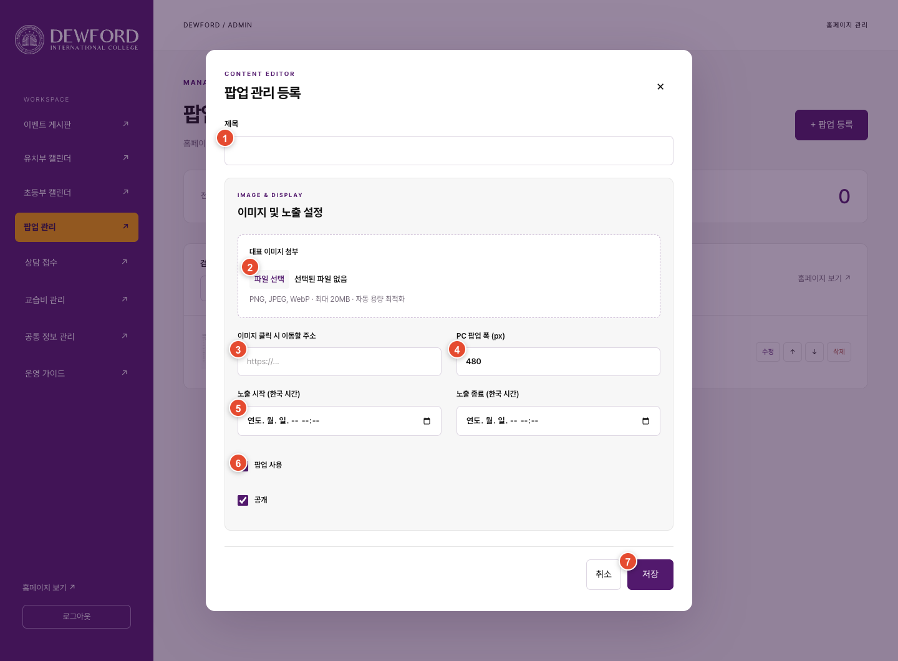
1관리용 제목을 입력합니다. 팝업에 보여 줄 안내 글은 첨부하는 이미지 안에 작성해 준비합니다.
2팝업 이미지를 선택합니다. 사진 또는 안내 이미지를 첨부하고 미리보기를 확인합니다.
3클릭 시 이동할 주소가 필요하면 전체 URL을 넣습니다. 연결할 페이지가 없다면 빈칸으로 둡니다.
4PC 표시 폭을 숫자로 입력합니다. 작은 화면에서는 화면 크기에 맞게 제한됩니다.
5한국 시간으로 노출 시작·종료 일시를 지정합니다. 기간이 지난 팝업은 표시되지 않습니다.
6팝업 사용과 공개를 확인합니다. 두 설정 모두 켜져 있고 노출 기간에 해당해야 표시됩니다.
7저장을 누른 뒤 홈페이지에서 결과를 확인합니다.
운영 중인 팝업을 잠시 숨길 때는 삭제하기보다 팝업 사용 또는 공개 체크를 해제하고 저장할 수 있습니다. 다음에 같은 내용을 다시 사용할 계획이면 항목을 남겨 두는 편이 관리하기 쉽습니다.
10
학원 공통 정보·SNS 상담 링크 변경
- 공통 정보 관리를 엽니다.
- 학원이름, 연락처, 이메일, 주소, 학원등록번호를 수정하고 SNS 상담 링크 관리에서 카카오톡·네이버 톡톡 주소를 입력합니다.
- 저장 후 홈페이지를 새로고침합니다.
- 푸터와 연락처 안내에서 공통 정보가 변경되었는지 확인하고, 플로팅·SNS 상담 버튼을 눌러 의도한 채널이 열리는지 확인합니다.
카카오톡은 kakao.com 계열, 네이버 톡톡은 naver.com 계열의 주소를 사용합니다. 저장한 설정은 사이트 내 상담 버튼에 공통 적용됩니다.
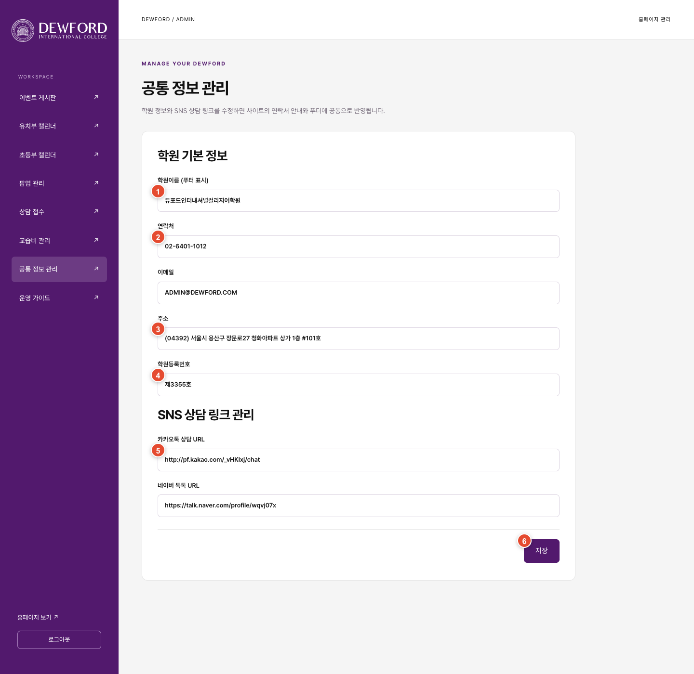
1학원이름은 홈페이지 푸터에 표시됩니다. 안내할 정식 학원명을 입력합니다.
2연락처는 표시 문구와 전화 버튼에 연결됩니다. 이메일 입력란도 같은 방식으로 표시와 메일 보내기 링크에 적용됩니다.
3전체 주소를 입력합니다. 푸터·연락처 안내·지도 링크에 공통으로 사용됩니다.
4등록번호를 입력합니다. 예: 제3355호. 학원등록번호라는 제목은 사이트에서 별도로 표시합니다.
5카카오톡 URL을 입력하고 그 아래 네이버 톡톡 URL도 확인합니다. 각 서비스의 실제 상담 링크를 복사해 붙여 넣습니다.
6모든 항목을 확인하고 저장합니다. 홈페이지를 새로고침한 뒤 연락처와 각 SNS 버튼을 확인합니다.
링크는 어디서 가져오나요?
카카오톡 채널 또는 네이버 톡톡 관리 화면에서 고객에게 안내하는 상담 URL을 복사합니다. 이름이나 아이디만 입력하는 것이 아니라 https://…로 시작하는 전체 주소를 넣어야 합니다. 저장 후 버튼을 눌러 실제 상담 채널이 열리는지 확인하는 단계까지 진행해 주세요.
11
공개 설정·순서·게시판 이동
- 비공개: 공개 체크를 해제하고 저장하면 방문자에게 표시되지 않습니다. 작성 중인 글은 비공개로 저장한 뒤 다시 수정할 수 있습니다.
- 순서 변경: ↑·↓ 버튼으로 게시글의 표시 순서를 조정합니다.
- 게시판 이동: 이동 버튼에서 목적지 게시판을 고릅니다. 캘린더로 옮길 때는 표시할 날짜도 확인합니다.
- 삭제: 확인 창의 글 제목·건수를 확인합니다. 화면에서 되돌리는 기능은 제공하지 않습니다.
- 동시 편집: 다른 화면에서 먼저 저장한 경우 최신 내용으로 다시 불러옵니다. 여러 탭에서 같은 글을 동시에 편집하지 않는 것이 좋습니다.
게시글을 안전하게 준비하는 순서
① 새 글을 작성합니다. ② 공개를 해제하고 저장합니다. ③ 관리자 목록에서 다시 수정 창을 열어 제목·본문·이미지를 확인합니다. ④ 공개를 체크하고 저장합니다. ⑤ 홈페이지에서 목록과 상세 화면을 확인합니다. 공개 글은 저장하면 사이트에 바로 적용되므로 작성 중인 내용을 공개 상태로 여러 번 저장하지 않도록 주의하세요.
12
문제가 생겼을 때
| 상황 | 확인할 내용 |
|---|---|
| 홈페이지에서 관리 버튼이 안 보여요 | 같은 운영 사이트에 로그인했는지 확인하세요. 로그인 유지 시간이 지났다면 다시 로그인합니다. |
| 저장한 글이 안 보여요 | 저장 성공 안내, 공개 여부, 게시판 종류와 날짜를 확인하고 새로고침합니다. |
| 상담 내역을 불러오지 못해요 | 새로고침 후에도 동일하면 사이트 담당자에게 화면 주소와 오류 문구를 전달합니다. DB 연결 또는 업데이트 확인이 필요할 수 있습니다. |
| 사진 업로드에 실패했어요 | 지원 형식·파일 용량·네트워크를 확인합니다. 저장 공간 관련 오류는 담당자에게 문의합니다. |
| 변경 내용 충돌 안내가 떠요 | 최신 내용을 확인한 뒤 다시 편집·저장합니다. |
| 신청이 접수되지 않았다고 나와요 | 성공 안내 없이 접수가 끝난 것으로 간주하지 마세요. 잠시 후 재시도하거나 전화로 안내합니다. |
관리할 때 함께 확인하기
- 글·일정을 등록한 뒤 PC와 모바일에서 제목, 사진, 날짜를 확인합니다.
- 상담 신청은 개인정보가 포함되어 있으므로 다운로드 파일은 필요한 담당자에게만 전달합니다.
- 공용 컴퓨터에서는 작업 후 로그아웃하고 내려받은 상담 파일도 정리합니다.
담당자에게 문의할 때 보내면 좋은 정보
문제가 생긴 페이지의 주소, 눌렀던 버튼, 화면에 표시된 오류 문구, 발생 시각과 PC·휴대폰 여부를 함께 전달하면 원인 확인에 도움이 됩니다. 캡처에는 비밀번호나 상담 신청자의 개인정보가 불필요하게 노출되지 않도록 가려 주세요.